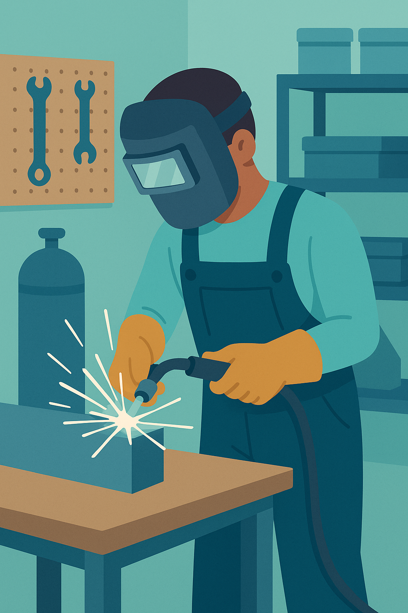

Navigating Your Future: Setting Goals and Mastering Success
By Fernando Braunza Asensio, CIDEAD Magazine, March 2025
In today’s fast-paced world, planning your future and mastering key skills at work are essential steps toward achieving your dreams and building a successful career. Whether you’re finishing high school, starting a new job, or aiming to grow in your current role, setting clear goals acts like a personal GPS system to guide you toward your aspirations, while developing workplace skills can help you excel professionally. This article explores how to set achievable goals and apply practical strategies to thrive in both personal and professional settings.
Setting Goals for Your Future
Setting goals is the first step to turning your dreams into reality. Clear and specific goals give you a target to aim for, making it easier to track your progress. For example, instead of saying, “I want to be successful,” try, “I aim to start my own sustainable business within five years.” Specific goals keep you focused and motivated.
To succeed, set achievable targets. Big dreams are important, but breaking them into smaller steps helps you stay motivated. For instance, if your goal is to study abroad, start by researching programs or saving money each month. These small actions build momentum toward your larger vision.
Prioritize your goals based on what matters most to you. Some goals, like finding a part-time job to fund your education, may need immediate attention, while others, like learning a new language, can be long-term. Create a timeline using tools like calendars or apps to set deadlines and stay on track. Deadlines create urgency and help you avoid procrastination.
Stay adaptable, too. Life brings surprises, and it’s okay to adjust your goals as your interests evolve. Flexibility ensures your goals remain relevant. Finally, celebrate your achievements, no matter how small. Rewarding yourself—like enjoying a movie night or time with friends—keeps you motivated for the journey ahead.
Mastering Keys for Success at Work
Once you’ve set your goals, mastering key workplace skills can help you achieve them. Effective communication is essential. Clear communication involves expressing your ideas well, listening actively, and understanding your colleagues’ perspectives. Good communication builds trust and sets you apart in any workplace.
A positive attitude is another key to success. Staying optimistic boosts your motivation and inspires those around you. A positive mindset helps you handle challenges and creates a productive work environment. Even on tough days, a smile and proactive approach can make a big difference.
Time management is also crucial. Prioritizing tasks, setting realistic goals, and using your time efficiently increase your productivity. For example, making a daily to-do list can help you focus on what’s most important. Working smarter, not harder, is the secret to getting more done.
Continuous learning keeps you competitive. Stay updated on industry trends, take courses, or learn new skills to stay ahead. For instance, learning digital tools can open new career opportunities. Seeking feedback from colleagues or mentors also helps you improve.
Finally, build strong relationships. Networking with colleagues, mentors, and professionals provides support and opens doors. Genuine connections, built on trust, are more valuable than just collecting contacts. Attend work events or join professional groups to grow your network.
Conclusion
Setting clear goals and mastering workplace skills are powerful tools to shape a bright future. By defining your vision, taking actionable steps, and staying committed, you lay a strong foundation for personal success. At the same time, developing skills like communication, positivity, time management, continuous learning, and networking helps you thrive in the workplace. Embrace this journey with focus and flexibility, and watch as your goals and skills propel you toward a fulfilling career and life.